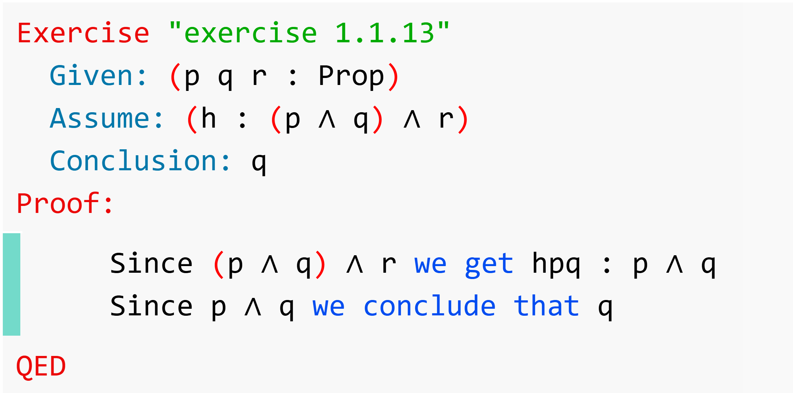
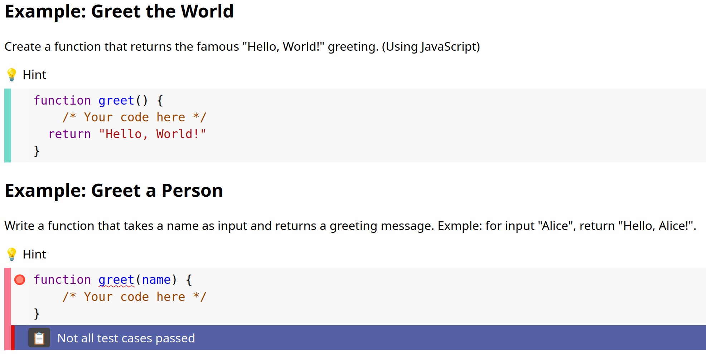

Waterproof Editor: an educational environment for proof assistants and programming languages
Waterproof, an educational tool for teaching mathematical proof built on Rocq, had its editor features tightly coupled to Rocq. This made it hard to reuse them with other proof assistants such as Lean, or with programming languages.
The editor features were split off into a reusable npm package, Waterproof Editor. These features include Markdown rendering, protected input areas, inline feedback, and collapsible hints. Its only conceptual requirement is an evaluation function on input areas. For Lean, Verbose Lean was integrated using the lean4-infoview package and a custom Verso genre, so that plain files remain editable with standard tools.

Three use cases are demonstrated: Waterproof with Verbose Lean, JavaScript programming exercises checked by test suites, and a browser-only Waterproof built on a Rocq-lsp WASM webworker. The authors argue that extending the editor to further languages is feasible as a student project.
